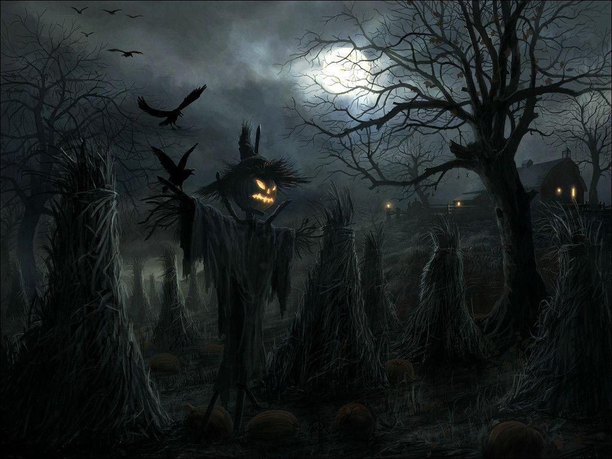

| Terror |
Alien El Octavo Pasajero
La nave comercial Nostromo y su tripulación, siete hombres y mujeres, se disponen a volver a la Tierra transportando un cargamento de mineral importante. Pero cuando se detienen forzosamente en un planeta desierto, el oficial Kane es repentinamente atacado por una forma de vida desconocida, un arácnido que se adhiere a su cara.
El Resplandor
Basada en la novela del maestro del terror Stephen King, El Resplandor tiene como protagonista a Jack Torrance (Jack Nicholson), un hombre casado y con un hijo, Danny (Danny Lloyd). Un día, Jack acepta un puesto como vigilante en un aislado hotel. El trabajo consiste en pasar todo el invierno allí con su familia, cuidando del recinto.
El Exorcista
En Iraq, el Padre Merrin queda profundamente turbado por el descubrimiento de una figurilla del demonio Pazuzu y las macabras visiones que ésta provoca. Mientras tanto, en Washington, en la casa de la actriz Chris MacNeil se están produciendo extraños fenómenos: la despiertan extraños sonidos que vienen del granero y su hija.
Psicosis
Inspirada en la novela homónima de Robert Bloch, la historia está ambientada en un tétrico motel de carretera llamado cuyo dueño es Norman Bates (Anthony Perkins, 'Asesinato en el Orient Express'). Junto al motel hay una casa, tan poco acogedora como el edificio, en la que reside el señor Bates con su madre.
|

|